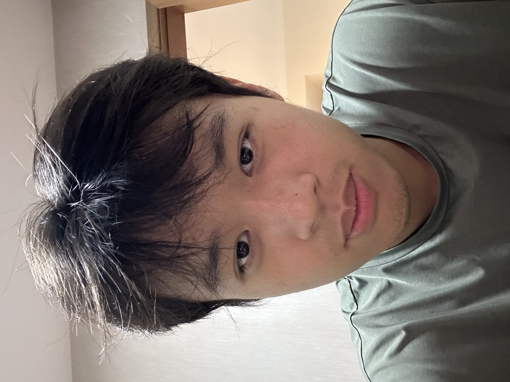

Pittsburgh Institute, Sichuan University
B.Eng. candidate in Mechanical Design, Manufacturing and Automation

B.Eng. candidate in Mechanical Design, Manufacturing and Automation
Supervisor: Prof. Zhongyu Li
Meta-learning exploration patterns that help agents learn how the world works and adapt to new situations or tasks.
Using language-model guidance to support autonomous policy learning, with memory that carries experience into new situations or tasks.
Learning and adapting to unfamiliar dynamics by retaining interaction history and improving across repeated attempts.